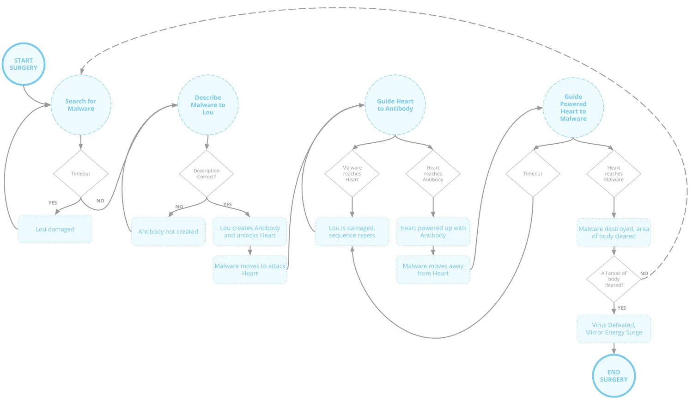
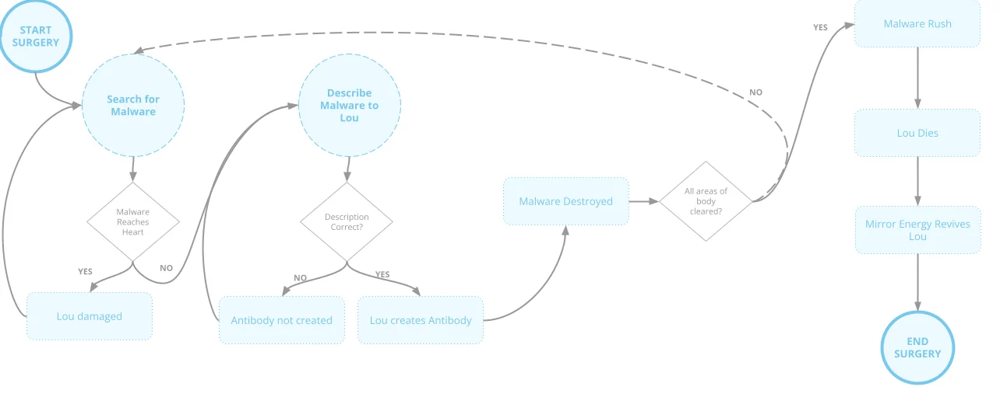

01What I owned
Proximity is a prototype, a passion project I started with my co-founder Matt. Apart from the creative vision, I owned:
- Creating and implementing all the player interactions and puzzle elements
- Mission and story progression
- All of Lou's interactions and animations, using a mocap suit, hand animation and FinalIK
- Pitching and funding the concept
- Hiring and managing a fully remote team of around 5
02The idea
Proximity is a prototype of a narrative adventure for Quest 2, featuring conversation-driven gameplay with an eccentric robot named Lou. Players can talk with Lou, whose voice is generated in real-time, allowing Lou to respond in potentially new and original ways each play session.
I started with the thought "What if you could go on a narratively-driven adventure but you had a companion that you could turn to talk to at any point throughout it?"

The goal was to create an interactive AI character that you could develop a relationship and bond with through conversation and working through challenging circumstances together.
I secured closed beta access to GPT-3 and started working directly with OpenAI to understand what these models could actually do in an interactive context.
03Prototyping the story
An early blockout prototype of the story beats in VR. Each beat is written into the scene, and the player grabs to move on to the next one.
04Conversation as gameplay
The surgery sequence is built around talking with Lou. The player searches for the malware, describes it to Lou out loud, and if the description is right Lou creates an antibody and unlocks the heart. The player then guides the heart to the antibody and on to the malware, and repeats the sequence until every area of the body is clear.


05Building Lou
I created and set up all of Lou's interactions and animations with a combo of myself in a mocap suit, hand animating and FinalIK implementation.
Building Lou
- Mocap suit
- Hand animating
- FinalIK
A combo of all three, with me in the mocap suit.

06Pitch and team
This was a passion project created with a team of around 5 people started by myself and my co-founder Matt. With my experience in games and design and Matt's experience in writing and narrative we set out to create this interactive VR experience.
I started as the sole developer. We successfully pitched and raised funds for the concept as well as hired a team to help create it, and that core team of 5 completed the fully playable experience.
We built the base framework for Proximity together with Playabl Studios. The game had a limited private release.
07What I learned
Proximity and FORM both taught me a lot about how quickly you can get to the truth of whether something is actually fun when you're working fast and hands-on.